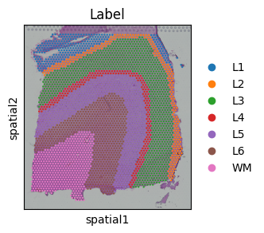
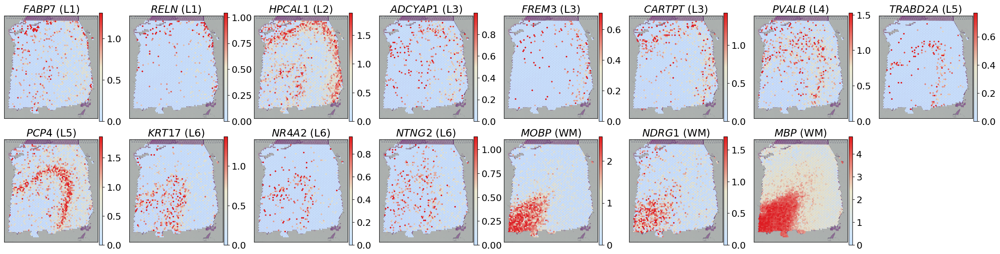
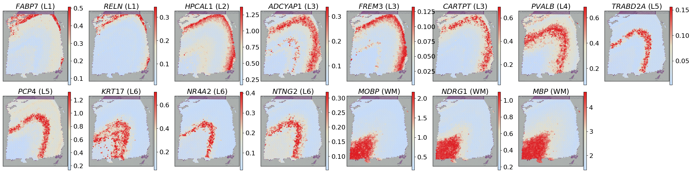
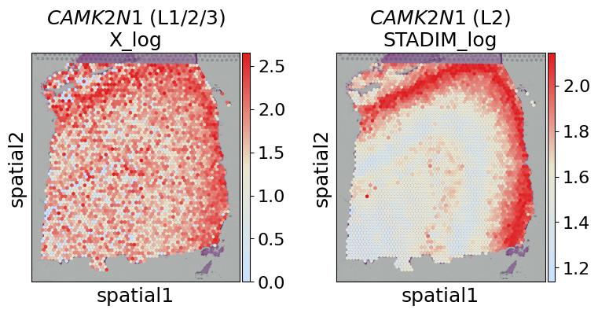
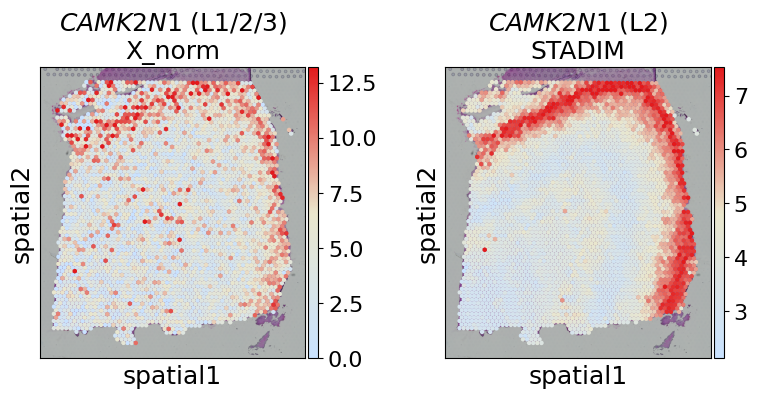

Tutorial 1: Denoising on single-slice DLPFC data from 10x Visium
In this tutorial, we demonstrate the denoising capabilities of STADIM using single-slice data. We use the human Dorsolateral Prefrontal Cortex (DLPFC) slice #151673 generated by 10x Visium platform as a representative example, which is annotated by Maynard et al. into white matter (WM) and cortical layers (L1-L6) based on marker genes and cellular structure.
We download the data via http://spatial.libd.org/spatialLIBD/.
Quick view data
[1]:
import anndata as ad
raw_data = ad.read_h5ad('/data2/xiaost/SODA/Data/DLPFC/dlpfc_151673.h5ad')
print(raw_data)
AnnData object with n_obs × n_vars = 3611 × 33538
obs: 'in_tissue', 'array_row', 'array_col', 'sample', 'Label'
var: 'gene_ids', 'feature_types', 'genome'
uns: 'spatial'
obsm: 'spatial'
[2]:
print(raw_data.obs.head(5))
in_tissue array_row array_col sample Label
AACGTGATGAAGGACA-1 1 9 83 151673 L3
TGATTCCCGGTTACCT-1 1 64 50 151673 L6
CTTTGGCGCTTTATAC-1 1 32 18 151673 L4
ACGCTGTGAGGCGTAG-1 1 39 13 151673 L5
AGGTTACACCATGCCG-1 1 43 115 151673 L2
[3]:
import scanpy as sc
import matplotlib.pyplot as plt
fig, ax = plt.subplots(figsize=(3, 3))
sc.pl.spatial(raw_data, color='Label', ax=ax, show=False)
plt.show()

Run STADIM
You can call the STADIM command directly in your terminal:
nohup stadim --input "./dlpfc_151673.h5ad" --save_dir ./dlpfc_151673_test --device "cuda:0" --monitor --seed 2026 --min_genes 0 --min_cells 10 --knn_c 6 --knn_e 10 > ./dlpfc_151673_test.log 2>&1 &
and load the results into your Python environment for downstream analysis. The denoised expression matrix is conveniently stored within the layers attribute:
import anndata as ad
adata = ad.read_h5ad('/dlpfc_151673_test/sdata.h5ad')
## The denoised gene expressionis is stored in adata.layers['STADIM']
print(adata)
or you can call STADIM within a Jupyter Notebook as follows:
[4]:
import stadim
adata = stadim.run_STADIM(['/data2/xiaost/SODA/Data/DLPFC/dlpfc_151673.h5ad'], save_preprocessed_h5ad=None, save_dir=None,
sample_names=None, batch_key='sample', device='cuda:1', seed=2026,
min_genes=0, min_cells=10, nhvgs=2000, dim=50, knn_c=6, knn_e=10, mnn_n=25,
batch_size=256, triplets_update_ratio=0.8, hard_triplets_ratio=0.7,
epochs=100, lr=1e-3, loss_mode='nb', beta_trip=0.1,
encoder_layers=[512, 256, 64], decoder_layers=[1000])
Results will be stored in adata.layers['STADIM']
=== 1. Begin read_data!
Processing single slice: Using user-defined column 'sample'
Processing single slice: Keeping existing sample label 151673
Merging data...
Raw Merged Data: 3611 spots × 33538 genes
Unified Filtering (min_genes=0, min_cells=10)...
→ After Filtering: 3611 spots × 16567 genes
✓ Complete: Samples included: ['151673']
✓ Complete: AnnData object with n_obs × n_vars = 3611 × 16567
obs: 'in_tissue', 'array_row', 'array_col', 'sample', 'Label'
var: 'gene_ids', 'feature_types', 'genome', 'n_cells'
uns: 'spatial'
obsm: 'spatial'
layers: 'X_raw'
=== 2. Begin MY_preprocess!
== Selected 2000 HVGs across 1 slices
=== 3. Begin all_ap find neighbors!
=== 4. Begin pre_dataset!
{0: '151673'}
Preparing triplet: 100%|██████████| 3611/3611 [00:00<00:00, 6602.14it/s]
=== 5. Begin IterableTripletDataset!
Initializing triplets...
IterableTripletDataset Initialized: 3611 anchors, batch_size=256
=== 6. Begin calculate_recommended_margin!
Calculating recommended margin (averaging over 5 runs)...
========================================
Margins from 5 runs: [15.0, 15.0, 15.0, 15.0, 15.0]
Final Recommended Margin: 15.0000
=== 7. Starting training...
Begin training: device=cuda:1
Training: 100%|██████████| 100/100 [01:27<00:00, 1.14it/s, recon=0.366, triplet=3.448, total=0.711]
=== 8. Generating denoised expression...
Data size (5.98e+07) is within limits. Allocating memory for denoised data.
All processes finished! Total time: 1.73 mins.
[5]:
print(adata)
AnnData object with n_obs × n_vars = 3611 × 16567
obs: 'in_tissue', 'array_row', 'array_col', 'sample', 'Label', 'n_genes_by_counts', 'log1p_n_genes_by_counts', 'total_counts', 'log1p_total_counts', 'size_factor'
var: 'gene_ids', 'feature_types', 'genome', 'n_cells', 'n_cells_by_counts', 'mean_counts', 'log1p_mean_counts', 'pct_dropout_by_counts', 'total_counts', 'log1p_total_counts', 'highly_variable'
uns: 'spatial', 'log1p', 'top_hvgs'
obsm: 'spatial', 'S_scale', 'X_hvg_scale', 'X_pca', 'cell_names', 'STADIM'
layers: 'X_raw', 'X_norm', 'X_log', 'STADIM', 'STADIM_withbatch'
Analysis
[6]:
import anndata as ad
import pandas as pd
import scanpy as sc
import numpy as np
import os
import warnings
warnings.filterwarnings('ignore')
import seaborn as sns
from matplotlib.colors import LinearSegmentedColormap
gene_exp_colors = sns.blend_palette(["#C9E2FF", "#eae6cc", '#e31a1c'], n_colors=100)
gene_exp_palette = LinearSegmentedColormap.from_list("gene_exp", gene_exp_colors)
import matplotlib.pyplot as plt
from matplotlib.lines import Line2D
import matplotlib.patches as mpatches
plt.rcParams.update({
'font.size': 16,
'axes.labelsize': 18,
'axes.titlesize': 18,
'xtick.labelsize': 16,
'ytick.labelsize': 16,
'legend.fontsize': 16,
})
gene_list = ['FABP7', 'RELN', 'HPCAL1', 'ADCYAP1', 'FREM3', 'CARTPT', 'PVALB', 'TRABD2A',
'PCP4', 'KRT17', 'NR4A2', 'NTNG2', 'MOBP', 'NDRG1', 'MBP']
gene_region = {
'FABP7': 'L1', 'RELN': 'L1',
'HPCAL1': 'L2',
'ADCYAP1': 'L3', 'FREM3': 'L3', 'CARTPT': 'L3',
'PVALB': 'L4',
'TRABD2A': 'L5', 'PCP4': 'L5',
'KRT17': 'L6', 'NR4A2': 'L6', 'NTNG2': 'L6',
'MOBP': 'WM', 'NDRG1': 'WM', 'MBP': 'WM'
}
Gene expression visualization
[7]:
fig, axes = plt.subplots(2, 8, figsize=(24, 6))
axes = axes.flatten()
for i, gene in enumerate(gene_list):
sc.pl.spatial(adata, layer='X_log', color=gene, cmap=gene_exp_palette, spot_size=150, ax=axes[i], show=False, img_key='hires',
vmax="p99", title=f"$\mathit{{{gene}}}$ ({gene_region[gene]})")
axes[i].set_xlabel('')
axes[i].set_ylabel('')
axes[-1].axis('off')
plt.tight_layout(pad=0.1)
plt.show()

[8]:
adata.X = adata.layers['STADIM'].copy()
sc.pp.log1p(adata)
adata.layers['STADIM_log'] = adata.X.copy()
fig, axes = plt.subplots(2, 8, figsize=(24, 6))
axes = axes.flatten()
for i, gene in enumerate(gene_list):
sc.pl.spatial(adata, layer='STADIM_log', color=gene, cmap=gene_exp_palette, spot_size=150, ax=axes[i], show=False, img_key='hires',
vmax="p99", title=f"$\mathit{{{gene}}}$ ({gene_region[gene]})")
axes[i].set_xlabel('')
axes[i].set_ylabel('')
axes[-1].axis('off')
plt.tight_layout(pad=0.1)
plt.show()
WARNING: adata.X seems to be already log-transformed.

Evaluation metrics
[9]:
import os
import sys
from contextlib import redirect_stdout
results = []
for layer in ['X_norm', 'STADIM']:
for gene, region in gene_region.items():
expr = adata.layers[layer][:, adata.var_names.get_loc(gene)]
expr = expr.toarray().flatten() if hasattr(expr, 'toarray') else np.array(expr).flatten()
mask = adata.obs['Label'] == region
target_val = expr[mask]
bg_val = expr[~mask]
with open(os.devnull, 'w') as fnull:
with redirect_stdout(fnull):
moran = stadim.calculate_new_morani(adata, [layer], {gene: region})
results.append({
'Method': layer,
'Gene': gene,
'Region': region,
'Tau': stadim.calculate_tau_index(expr, adata.obs['Label']),
'FC': stadim.calculate_fold_change(target_val, bg_val),
'Cohens_D': stadim.calculate_cohens_d(target_val, bg_val),
'Global_Moran': moran['Global_Moran'].values[0],
'Background_Moran': moran['Background_Moran'].values[0],
'newI': moran['newI'].values[0]
})
df_res = pd.DataFrame(results)
[10]:
for layer in ['X_norm', 'STADIM']:
print(f"\n=== Detailed Metrics for {layer} ===")
layer_df = df_res[df_res['Method'] == layer]
display(layer_df)
print("\n=== Final Summary (Averaged across all genes) ===")
summary = df_res.groupby('Method')[['Tau', 'FC', 'Cohens_D', 'Global_Moran', 'Background_Moran', 'newI']].mean()
display(summary.sort_values('newI', ascending=False))
=== Detailed Metrics for X_norm ===
| Method | Gene | Region | Tau | FC | Cohens_D | Global_Moran | Background_Moran | newI | |
|---|---|---|---|---|---|---|---|---|---|
| 0 | X_norm | FABP7 | L1 | 0.679730 | 3.176126 | 0.721098 | 0.089367 | 0.036577 | 0.526395 |
| 1 | X_norm | RELN | L1 | 0.833288 | 7.612881 | 0.775069 | 0.109547 | 0.045728 | 0.531910 |
| 2 | X_norm | HPCAL1 | L2 | 0.699730 | 3.068554 | 1.360526 | 0.221055 | 0.135886 | 0.542585 |
| 3 | X_norm | ADCYAP1 | L3 | 0.561619 | 2.554207 | 0.353631 | 0.051692 | 0.009240 | 0.521226 |
| 4 | X_norm | FREM3 | L3 | 0.714852 | 3.003668 | 0.259095 | 0.047120 | 0.017907 | 0.514607 |
| 5 | X_norm | CARTPT | L3 | 0.594013 | 3.195088 | 0.478894 | 0.124311 | 0.063235 | 0.530538 |
| 6 | X_norm | PVALB | L4 | 0.596678 | 2.239379 | 0.565294 | 0.074833 | 0.057134 | 0.508850 |
| 7 | X_norm | TRABD2A | L5 | 0.841705 | 7.867309 | 0.623517 | 0.071052 | -0.006673 | 0.532189 |
| 8 | X_norm | PCP4 | L5 | 0.697033 | 3.536765 | 1.128401 | 0.253894 | 0.066206 | 0.593844 |
| 9 | X_norm | KRT17 | L6 | 0.758341 | 3.998996 | 0.796877 | 0.125162 | 0.045310 | 0.539926 |
| 10 | X_norm | NR4A2 | L6 | 0.719760 | 3.072878 | 0.330337 | 0.053665 | 0.049078 | 0.502294 |
| 11 | X_norm | NTNG2 | L6 | 0.455522 | 1.800602 | 0.241853 | 0.024883 | 0.000786 | 0.512048 |
| 12 | X_norm | MOBP | WM | 0.919297 | 11.077320 | 3.416460 | 0.710332 | 0.331313 | 0.689509 |
| 13 | X_norm | NDRG1 | WM | 0.805246 | 4.729894 | 1.521295 | 0.268364 | 0.076004 | 0.596180 |
| 14 | X_norm | MBP | WM | 0.892194 | 8.341205 | 4.951767 | 0.909925 | 0.705406 | 0.602260 |
=== Detailed Metrics for STADIM ===
| Method | Gene | Region | Tau | FC | Cohens_D | Global_Moran | Background_Moran | newI | |
|---|---|---|---|---|---|---|---|---|---|
| 15 | STADIM | FABP7 | L1 | 0.581135 | 2.441201 | 3.132529 | 0.818420 | 0.757170 | 0.530625 |
| 16 | STADIM | RELN | L1 | 0.717490 | 4.364239 | 2.716194 | 0.814868 | 0.769424 | 0.522722 |
| 17 | STADIM | HPCAL1 | L2 | 0.662147 | 2.710248 | 3.049344 | 0.857274 | 0.783988 | 0.536643 |
| 18 | STADIM | ADCYAP1 | L3 | 0.531298 | 2.405351 | 2.059148 | 0.814738 | 0.609914 | 0.602412 |
| 19 | STADIM | FREM3 | L3 | 0.667070 | 2.597443 | 1.546577 | 0.877676 | 0.704484 | 0.586596 |
| 20 | STADIM | CARTPT | L3 | 0.568594 | 3.103972 | 2.004034 | 0.847647 | 0.755061 | 0.546293 |
| 21 | STADIM | PVALB | L4 | 0.525031 | 1.971619 | 1.827773 | 0.845831 | 0.791697 | 0.527067 |
| 22 | STADIM | TRABD2A | L5 | 0.802766 | 5.740999 | 2.960346 | 0.812605 | 0.380765 | 0.715920 |
| 23 | STADIM | PCP4 | L5 | 0.561332 | 2.447884 | 2.470404 | 0.835366 | 0.781112 | 0.527127 |
| 24 | STADIM | KRT17 | L6 | 0.741785 | 3.666232 | 2.546959 | 0.807889 | 0.594334 | 0.606777 |
| 25 | STADIM | NR4A2 | L6 | 0.738118 | 3.418727 | 1.538140 | 0.814291 | 0.634330 | 0.589981 |
| 26 | STADIM | NTNG2 | L6 | 0.434813 | 1.625638 | 1.125350 | 0.823101 | 0.784449 | 0.519326 |
| 27 | STADIM | MOBP | WM | 0.914177 | 10.399591 | 6.246632 | 0.957841 | 0.758200 | 0.599821 |
| 28 | STADIM | NDRG1 | WM | 0.779575 | 4.257239 | 5.381348 | 0.958056 | 0.792414 | 0.582821 |
| 29 | STADIM | MBP | WM | 0.889637 | 7.987041 | 5.747448 | 0.952741 | 0.770116 | 0.591312 |
=== Final Summary (Averaged across all genes) ===
| Tau | FC | Cohens_D | Global_Moran | Background_Moran | newI | |
|---|---|---|---|---|---|---|
| Method | ||||||
| STADIM | 0.674331 | 3.942495 | 2.956815 | 0.855890 | 0.711164 | 0.572363 |
| X_norm | 0.717934 | 4.618325 | 1.168274 | 0.209013 | 0.108876 | 0.549624 |
Label specific markers
[11]:
def get_markers(adata, layer, n_top=100):
key = f'rank_{layer}'
sc.tl.rank_genes_groups(adata, 'Label', method='wilcoxon', layer=layer, key_added=key)
df = sc.get.rank_genes_groups_df(adata, group=None, key=key)
# Add rank and filter top N
df['Rank'] = df.groupby('group').cumcount() + 1
return df[df['Rank'] <= n_top][['names', 'group', 'Rank']].rename(columns={'names':'Gene', 'group':'Label'})
# 1. Get Top 100 markers for both layers
df_norm = get_markers(adata, 'X_log')
df_stadim = get_markers(adata, 'STADIM_log')
# 2. Merge to find common and unique pairs
merged = pd.merge(df_norm, df_stadim, on=['Gene', 'Label'], how='outer', suffixes=('_norm', '_stadim'), indicator=True)
common = merged[merged['_merge'] == 'both']
unique_norm = merged[merged['_merge'] == 'left_only']
unique_stadim = merged[merged['_merge'] == 'right_only']
# 3. Quick Stats Report
print(f"--- Marker Stats (Gene-Label Pairs) ---")
print(f"Common: {len(common)} | Unique Norm: {len(unique_norm)} | Unique STADIM: {len(unique_stadim)}")
# 4. Specificity Analysis: Multi-label genes (Noise Reduction)
multi_norm = df_norm.groupby('Gene')['Label'].nunique()
multi_stadim = df_stadim.groupby('Gene')['Label'].nunique()
# Genes that are multi-label in Norm but single-label (specific) in STADIM
denoised_genes = list(set(multi_norm[multi_norm > 1].index) & set(multi_stadim[multi_stadim == 1].index))
print(f"\n--- Specificity & Noise Reduction ---")
print(f"Multi-label genes in Norm: {sum(multi_norm > 1)}")
print(f"Multi-label genes in STADIM: {sum(multi_stadim > 1)}")
print(f"Denoised genes (Multi-label -> Single-label): {len(denoised_genes)}")
if denoised_genes:
print(f"Denoised gene examples: {denoised_genes[:10]}")
--- Marker Stats (Gene-Label Pairs) ---
Common: 154 | Unique Norm: 546 | Unique STADIM: 546
--- Specificity & Noise Reduction ---
Multi-label genes in Norm: 162
Multi-label genes in STADIM: 0
Denoised genes (Multi-label -> Single-label): 34
Denoised gene examples: ['CRYAB', 'DIRAS2', 'UBE2QL1', 'HS3ST2', 'NEFL', 'MAG', 'CAMK2N1', 'ENC1', 'CLDND1', 'ATP5F1B']
[12]:
merged[merged['Gene'] == 'CAMK2N1']
[12]:
| Gene | Label | Rank_norm | Rank_stadim | _merge | |
|---|---|---|---|---|---|
| 192 | CAMK2N1 | L1 | 31.0 | NaN | left_only |
| 193 | CAMK2N1 | L2 | 1.0 | 8.0 | both |
| 194 | CAMK2N1 | L3 | 28.0 | NaN | left_only |
[13]:
gene = 'CAMK2N1'
labels_gene = ['L1/2/3', 'L2']
layers = ['X_log', 'STADIM_log']
fig, axes = plt.subplots(1, 2, figsize=(8, 4))
for i, layer in enumerate(layers):
sc.pl.spatial(adata, layer=layer, color=gene, cmap=gene_exp_palette, spot_size=150, vmax='p99',
ax=axes[i], show=False, title=f"$\mathit{{{gene}}}$ ({labels_gene[i]})\n{layer}")
plt.tight_layout()
plt.show()

[14]:
gene = 'CAMK2N1'
labels_gene = ['L1/2/3', 'L2']
layers = ['X_norm', 'STADIM']
fig, axes = plt.subplots(1, 2, figsize=(8, 4))
for i, layer in enumerate(layers):
sc.pl.spatial(adata, layer=layer, color=gene, cmap=gene_exp_palette, spot_size=150, vmax='p99',
ax=axes[i], show=False, title=f"$\mathit{{{gene}}}$ ({labels_gene[i]})\n{layer}")
plt.tight_layout()
plt.show()

[ ]:
[ ]: